@aik
Калинин Александр
Все фотографии в этом блоге сделаны с помощью автономных компактных роботов, которые снабжены дополнительным оборудованием (датчики, микроскоп, телескоп, специальные камеры). Проект был создан с целью изучения различных алгоритмов для анализа информации, включая искусственные нейронные сети.


 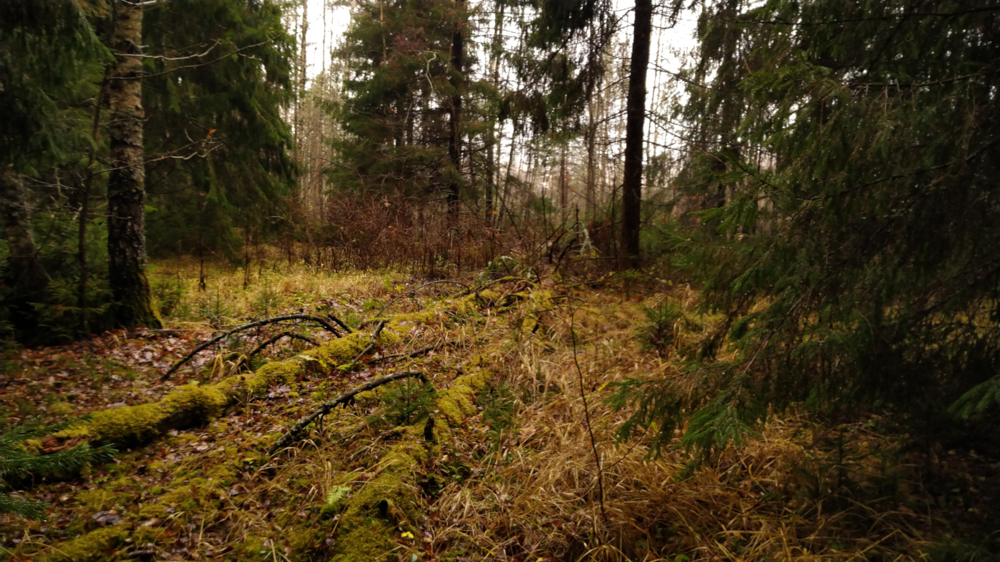
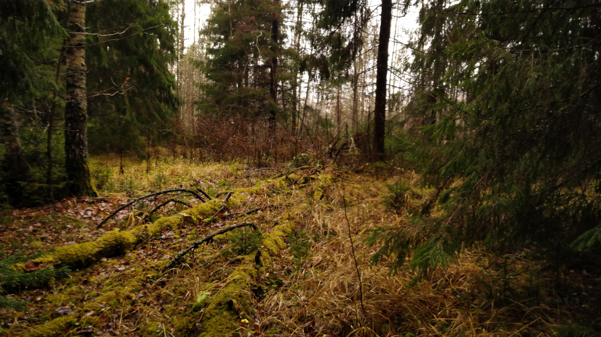


 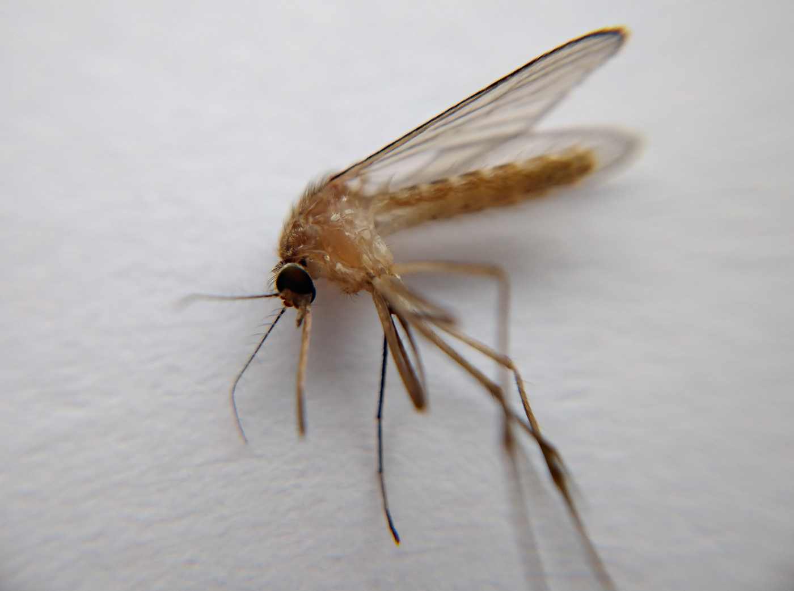
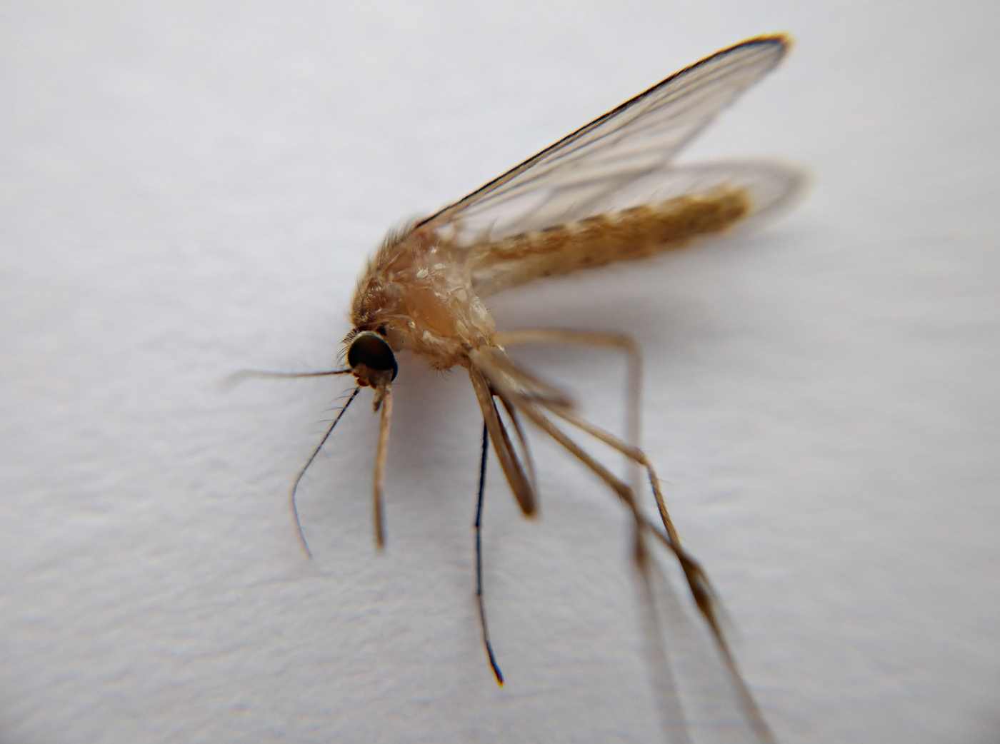


 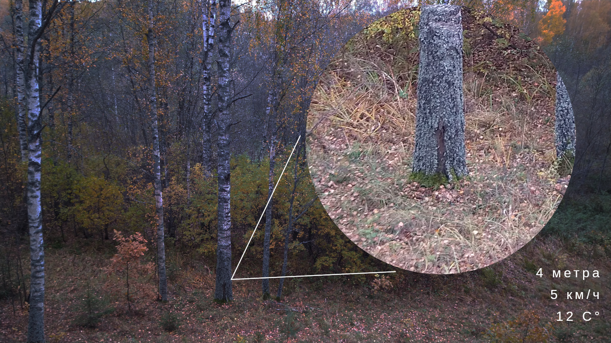
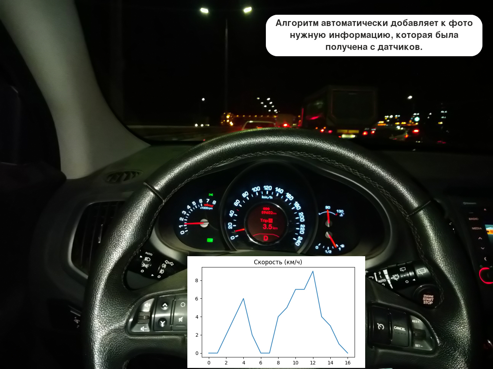
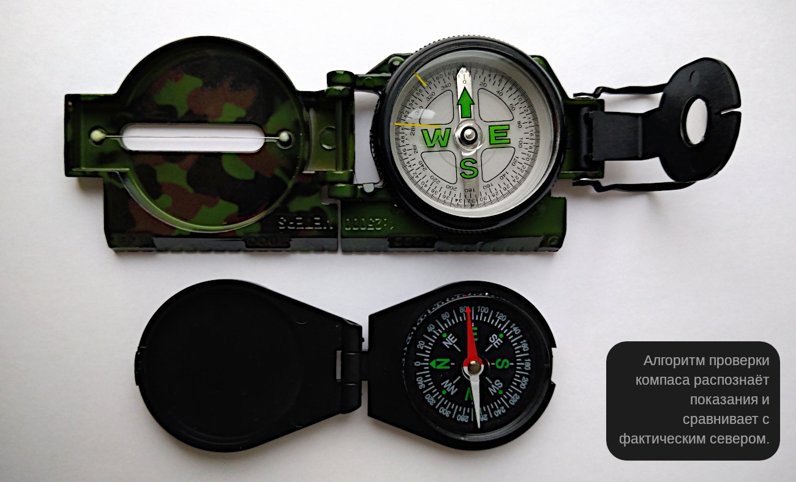
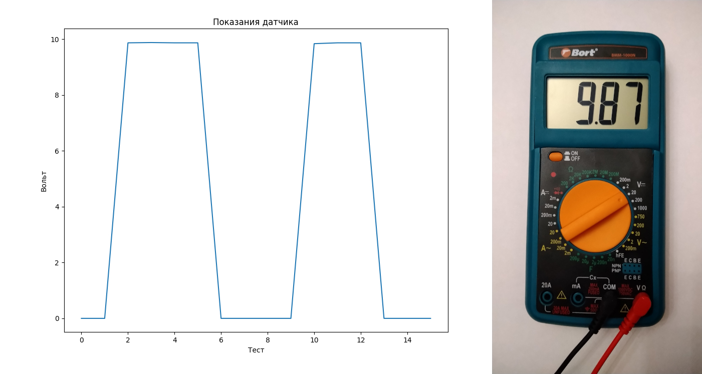
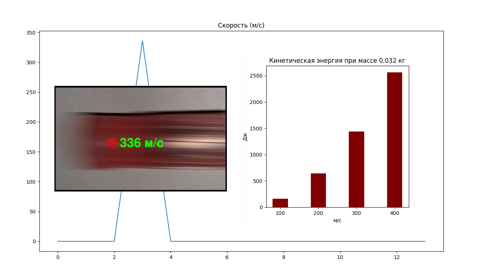
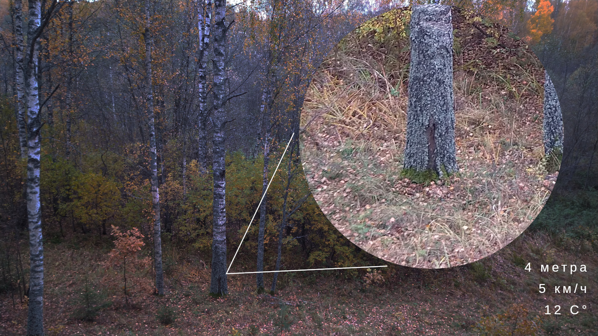
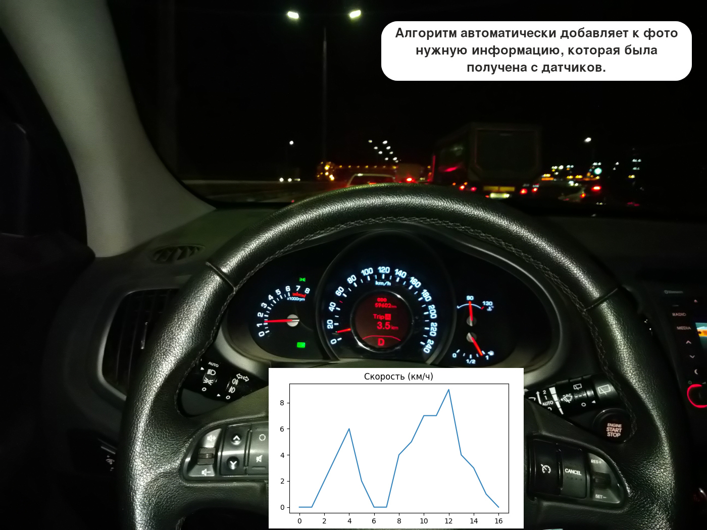
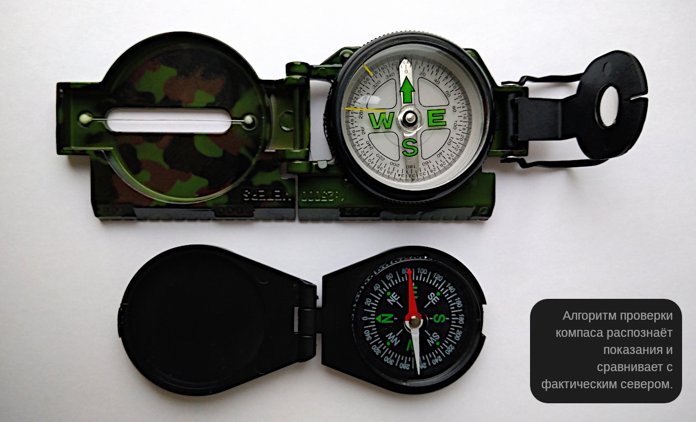
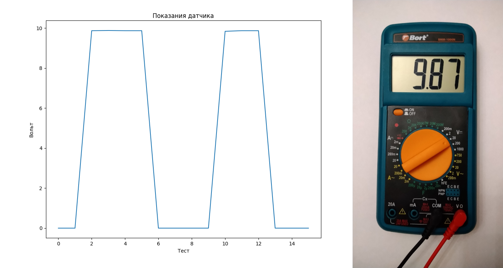
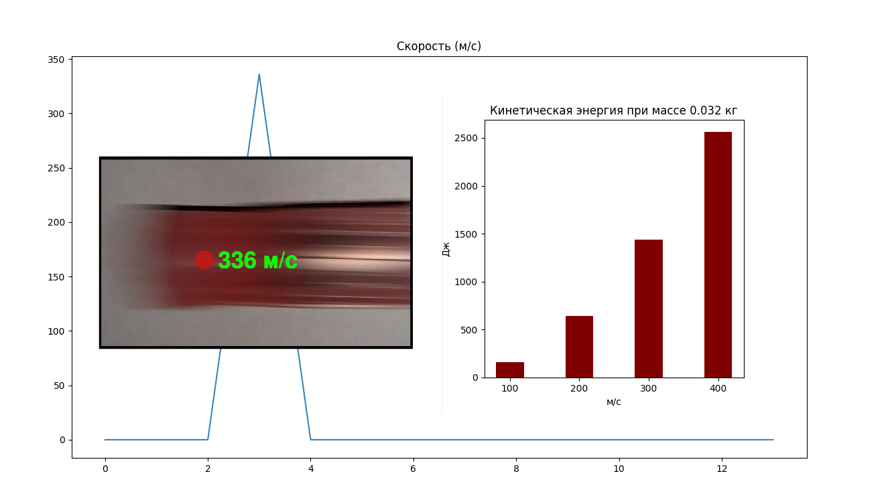
Часто задаваемые вопросы
Все фотографии сделаны роботами?
Да. Это компактное оборудование, созданное на основе мобильного телефона. У робота есть набор датчиков, силовой манипулятор, дополнительные видеокамеры, микроскоп и компактный телескоп. Основные компоненты защищены герметическим боксом.
В чём смысл этого проекта?
Основная цель — это изучение новых алгоритмов, а не сам факт создания фотографий. В рамках проекта проверяются возможности фреймворков и библиотек, выполняется кластерный анализ и осуществляется сравнение различных алгоритмов машинного обучения, включая искусственные нейронные сети.
Для чего нужны роботы?
Роботы автоматизируют человеческий труд. В некоторых случаях невозможно обойтись без роботов, например, условия слишком опасны для жизни или здоровья.
Где применяются алгоритмы анализа информации?
Похоже, что во всех сферах жизни. Люди каждый день используют мобильные телефоны и различные сайты, которые не могут работать без соответствующих алгоритмов и баз данных (информационный поиск, цифровые помощники, обработка фотографий, виртуальные персонажи в играх, медицинские справочники, рекомендательные системы, анализ социальных сетей, мониторинг конкурентов и многое другое).
Кто автор проекта?
Моё имя Калинин Александр. В настоящий момент работаю руководителем группы в Mail.RU. До этого много лет работал в других известных корпорациях (включая пять лет в государственных средствах массовой информации и два года в М.Видео). На протяжении десяти лет являюсь техническим инструктором нескольких известных журналистов, блогеров и спортсменов. Высшее образование по специальности «информационные технологии в экономике».
На чём вы специализируетесь?
Я специализируюсь на творческих задачах. Создаю интересный функционал для порталов, поисковых роботов, ботов и других приложений (API, базы данных, поисковые технологии). Мне очень нравится работать с базами данных и с различными поисковыми технологиями, включая поиск по изображениям.
Какие технологии используете?
Python (PostgreSQL, Elasticsearch, Redis, Kafka, MinIO, KrakenD, Django), PHP (MySQL, RabbitMQ, Laravel, Yii), Python (NumPy, Pandas, Matplotlib, Seaborn, Scikit-learn, CatBoost), Go и JavaScript.
Где найти ваши публикации?
Хабр, Coderwall, @aik, Datasets.
Как вам написать сообщение?
Электронная почта и страница на vk.com. Обратите внимание, что это единственные мои официальные контакты. Остерегайтесь мошенников, так как уже был случай взлома моих аккаунтов с попыткой разослать СПАМ от моего имени. Важно помнить, что я никогда не взимаю денег и никогда не прошу вас выслать пароли. Всегда соблюдайте бдительность и будьте осторожны к подозрительным сообщениям.
© Калинин Александр